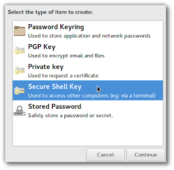
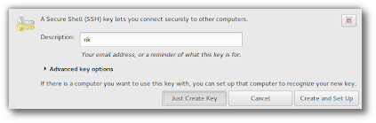
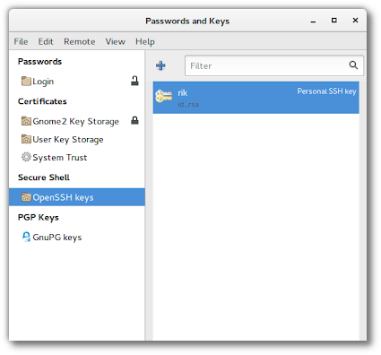
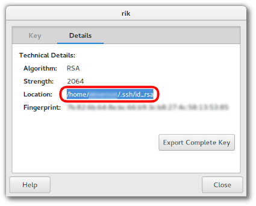
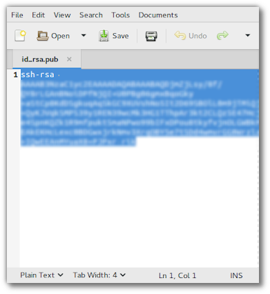
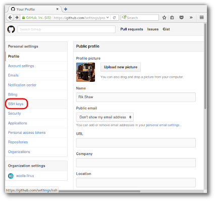
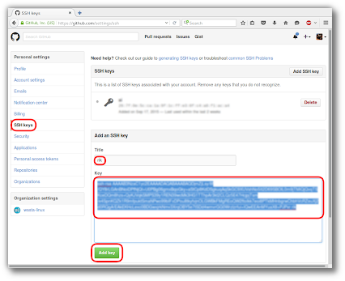
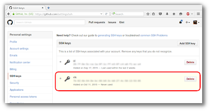

Wasta-Linux: GitHub Setup
This page is part of the Wasta-Linux customizing process.
Follow the below steps in order establish your GitHub ID and register a SSH key with GitHub in order to be ready to contribute to the Wasta-Linux custom packages hosted on GitHub.
-
Sign up for a GitHub ID
-
Create an Open SSH Key
-
“Passwords and Keys” app: Select
File > Newfrom the menu to create a Secure Shell Key (if you do not already have one: if you already have one you can skip ahead to step 3)
-
Give the key a descriptive name, ignore any Advance key options, and click “Just Create Key”

-
DO NOT set a passphrase when prompted, just leave it blank and click “OK” 2 times.
-
You should now see your SSH key in the “OpenSSH keys” section of the Passwords and Keys application:

-
-
Add SSH Key to your GitHub account
-
“Passwords and Keys” app: Open the SSH key created in step 2 and go to the “Details” tab, noting the location of the folder. Typically this would be the hidden
.sshfolder in your user home.
-
Open the
id\_rsa.pubfile (the “Public Key” for your SSH key) in the ssh folder and copy the entire contents of the id_rsa.pub file to your clipboard. The file should look something like this:
-
Log into your GitHub account and click on your user name / icon in the top right of any GitHub page, and choose “Settings”. From the main “Settings” page you should see a “SSH keys” tab like this:

-
In the “SSH keys” tab, click “Add SSH key”, entering a description in the “Title” field and pasting in the contents of your id_rsa.pub file from the clipboard in the “Key” field. Click “Add key”.

-
Your “SSH keys” tab should now list the key:

-
-
Contact the Wasta-Linux team
Please contact us through the Wasta-Linux Users Forum after you have created your GitHub account so we can add your GitHub ID as a GitHub Wasta-Linux organization member.